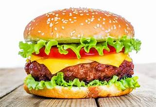
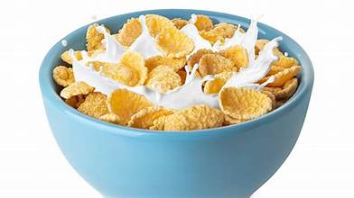

chicken
chicken: chicken is a great food when you add salt and eat it whit
other foods but just chicken is kinda good but not as good as eating it whit other foods
croassant
croassont its a good food its from france
hamburger
hamburger its just yummy
cereal
cereal its just a good food for breakfest
xacafuri
xacafuri good food whit cheese